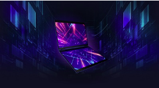

Na Computex 2018, Asus em parceria com a Microsoft, Amazon e Intel apresentaram um produto que pode revolucionar o futuro dos notebooks. A proposta apresentada foi a de um notebook híbrido cujo o projeto foi denominado Precog.
A principal ideia da proposta foi a substituioção do teclado fśico e touchpad por uma tela secundária praticamente idêntica a primeira, mas essa, sensível ao toque. Ela dispõe de um teclado virtual, que pode ser ocultado quando conveniente e substituído por outras aplicações ou informações diferenciadas.
Além disso, ele também pode ser utilizado de diversas maneiras, como um tablet através da rotação total do display, modo tradicional de um noteboook, operando com um teclado, nesse caso virtual, utilizando porções da segunda tela e até mesmo utilizando as suas telas.
O modelo é um protótipo ainda sem data de lançamento ou preços definidos. A estimativa é que ele pode chegar ao mercado em algum momento de 2019.
Clique na imagem acima para ver a proposta de outro dispositivo "multiuso"
Algumas informações técnicas:
O notebook conta com o uso de Inteligência artificial e Machine Learning para melhorar a interatividade e o conforto do usuário. Esse também podem ser auxiliados por assistentes virtuais melhoradas como a Amazon Alexa e a Microsoft Cortana.
O computador virá equipado com um outro diferencial, uma unidade de processamento visual de baixo consumo de energia denominada Movidius, da Intel.
Essa unidade permite:
Inteligência visual acelerada por hardware.
Objeto em tempo real e detecção de rosto.
Perfil, ajustar e implantar redes neurais profundas.
Experiência de entrada adaptativa.
Melhorias como o tempo útil da bateria ainda serão implementadas com base na rotina de tarefas do usuário. Além disso, as IA estão sendo otimizadas para prever alguns movimentos do usuário e o tamanho de suas mãos, podendo adaptar ferramentas como por exemplo o teclado ivrtual, tornando o sistema mais interativo e agradável.